It's been 3.5 years since my last LUTS order. The troops have expanded. The 1/3 male shoes are in high demand. Hagi-chan stole Santi's temporary wig. It was time.
If you are unaware, LUTS does goods sales in the Spring and Autumn. Their summer events involve smaller discounts and limited dolls. I don't need any LUTS dolls but I always need more eyes, shoes, and wigs, so I forget LUTS exists outside of 2 months per year.
After a grueling few weeks of trying to decide, the Autumn sale was coming to an end and I had to make my order on 10/12. The order shipped 10/16 and arrived on 10/19. It was shipped via EMS Premium with FedEx doing the final delivery.
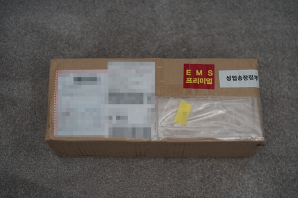
The item total was $485 and the shipping cost was $70. The Autumn event discount took off $110 and I still had $36 in points from the shipping overcharge from 2023. The final total came out to $408.
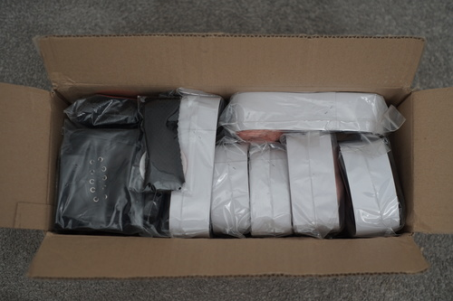
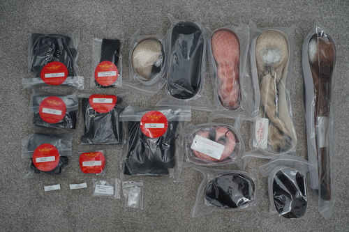
I'm sure you're all curious what the actual shipping charge was! The charge was hidden under the Fedex sticker, but I was able to see 73300 won under the label. On the day of delivery, that was $55 USD. LUTS shipping calculator does it again, but only half as bad as my last overcharge.
I must apologize and say I do not currently have a doll with me that can model these! I bought these for Liam, CJ (incoming), Draven (incoming), and my Unoa Lusis.
All eyes were shipped in little plastic baggies. The foam stands I used were not included.
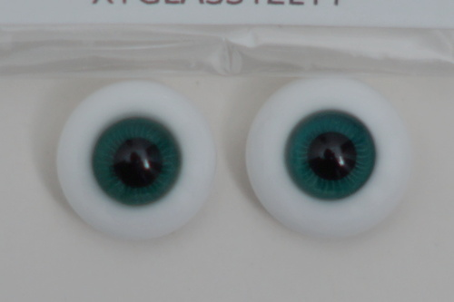
12MM XY EYES L11 - Flat back. They're a bit darker than I expected! I hope they'll be able to catch light in a head.
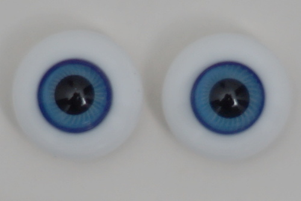
12MM XY EYES L01 - Flat back.
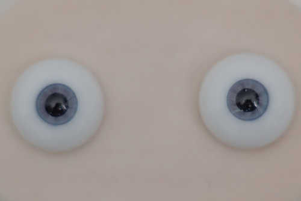
14MM SGLASS EYES NO 55 Narrow - WOW these are small iris! I would say they're just a tad smaller than the 12mm eye iris. The pupils are glittery but the glitter is not super noticable especially at this pupil size.
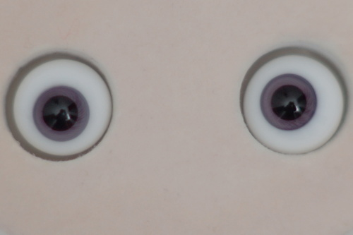
12MM LG EYES NO127 - Pupils feel extra dilated. Also a bit darker than I hoped.
Today, our cooperative model Pafa-chan returns for another round. Once again, all wig caps are white or beige. I LOVE this about LUTS wigs.
LUTS wig tip: all DW wigs are 9-10 and SDW are 8-9. LUTS wigs have a stretchy wig cap, so 8-9 will squeeze on most 1/3 Volks dolls, but not the massive headed ones such as F-特07. You can shop in both sections for most Volks SD dolls, but 9-10 is the safer option.
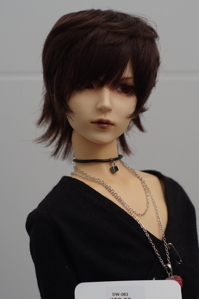
DW 083 Natural Black - Bought for Santi. It would look really cute on a punk girl though!!
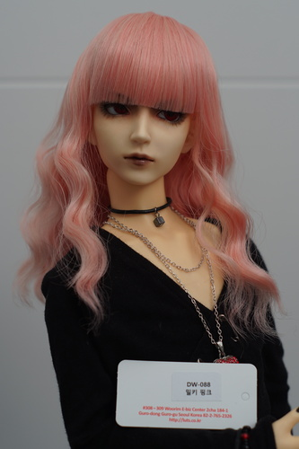
DW 088 Milky Pink - Bought for Ohagi. I can't decide if she should have straight or soft bangs, but I'll need to trim this one.
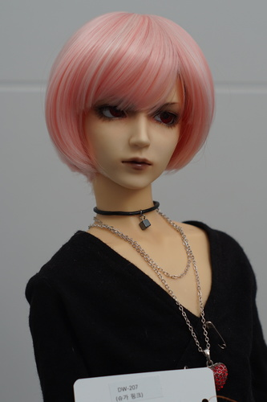
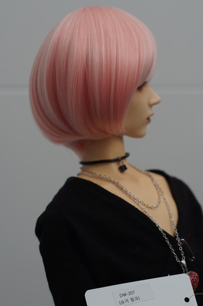
DW 207 Sugar Pink - Bought for Ohagi. The shape is a little funny.
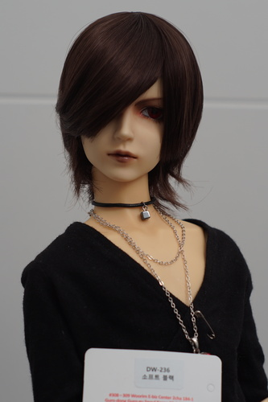
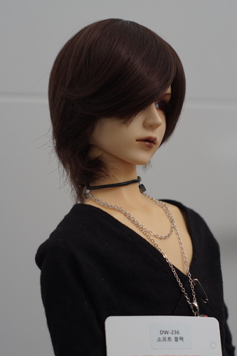
DW 236 Soft Black - Bought for Santi but it might stick with Pafa. The back part on one side is crinkled upward in a not very cute way and I'll have to fix it before anyone wears it.
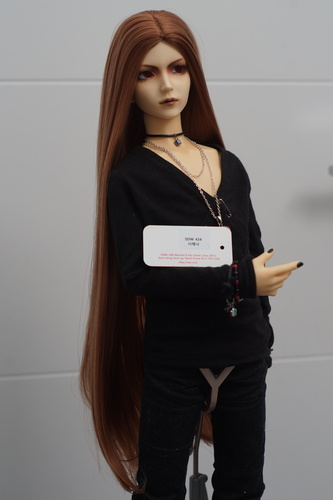
SDW 434 Sienna - I bought this for a planned doll (Julian) and I'm going to have no fun brushing this when he does exist.
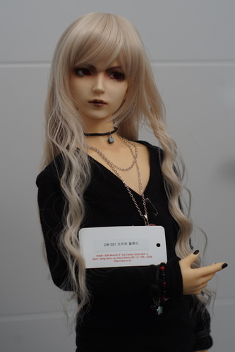
DW 021 Soft Blond - It looks so good on Pafa I don't want to give it to Hina!
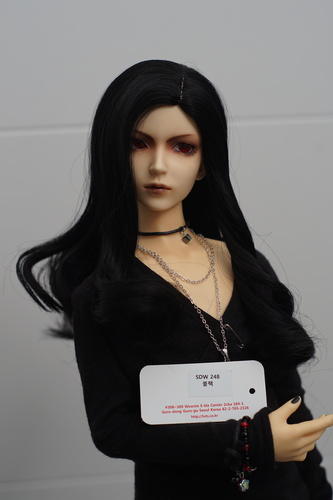
SDW 248 Black - For Volta. The part is centered on the cap, but you can rotate the wig to change the part location.
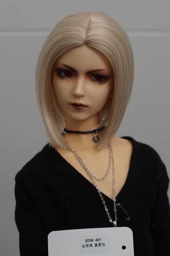
SDW 401 Soft blonde - For CJ. The part is also centered on this one.
All shoes are allegedly "genuine leather" as the representative on the LUTS QnA board confirmed to me. We'll see. I have not had issues with my 3.5 year old LUTS leather shoes yet. They are all particularly black so I have adjusted the curves in many photos so you can see them.
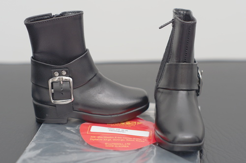
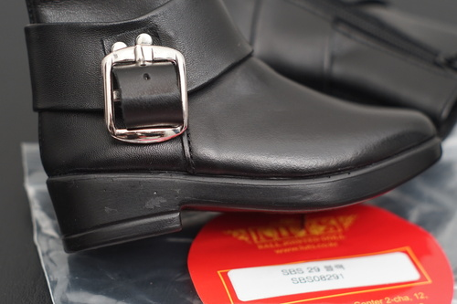
SBS 29 Boy Black - One of the zippers is very hard to zip. There's some damage under one of the decorative straps.
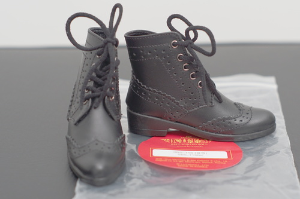
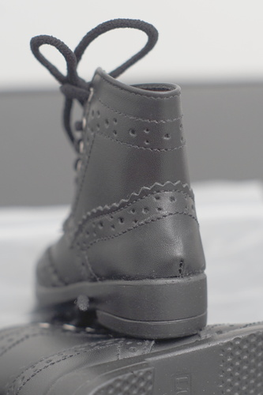
SBS 116 Black - These might have been a mistake. The laces are the stretchy black surgical mask elastic, but there's no zipper and they are HELL to get on the doll. And they are even WORSE to get off the doll. They look nice but they are staying put on the next doll they go on. This pair had light chalk(?) markings from construction, which I haven't seen before.
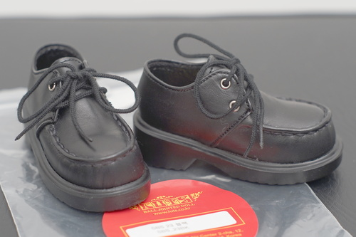
SBS 23 Black - Black creepers! I wish I had a pair for myself!
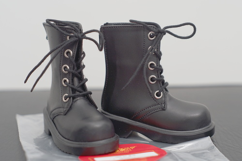
SBS 31 Boy Black - These are some very classic looking BJD shoes.
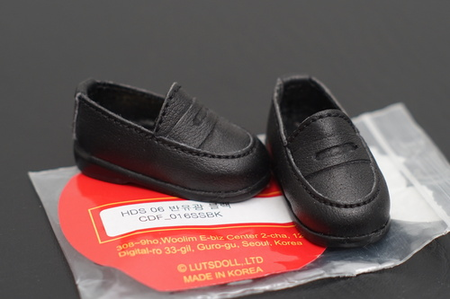
HDS 06 PENNY LOAFER Semi S Black - The little lad who loves carrots and cream finally has his own pair of shoes! They're very tight to get on with his socks.
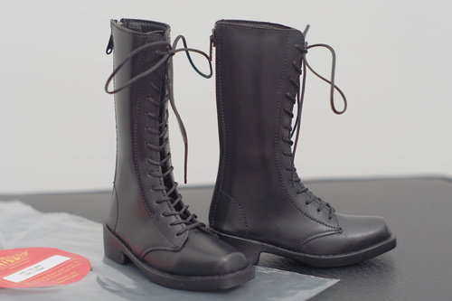
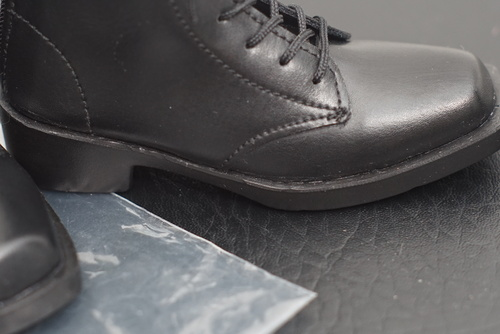
SBS 125 Black - It looks like the rubber bottom was hand trimmed on one shoe. There's some excess glue on the back of a shoe.
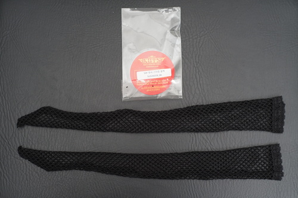
SDF Mesh Stockings Black - I didn't try them on Hina yet because I refuse to take off her kimono that I spent 30 minutes putting her in for Dolpa.
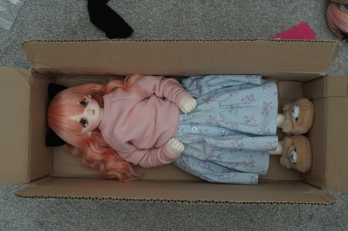
The box was exactly 1 Hagi-chan big!